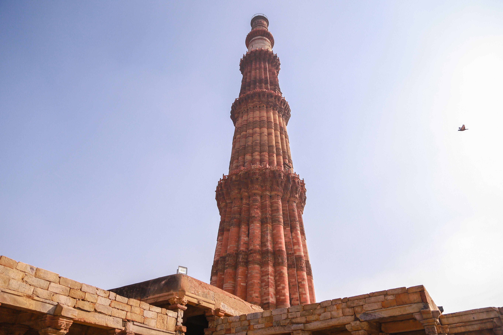
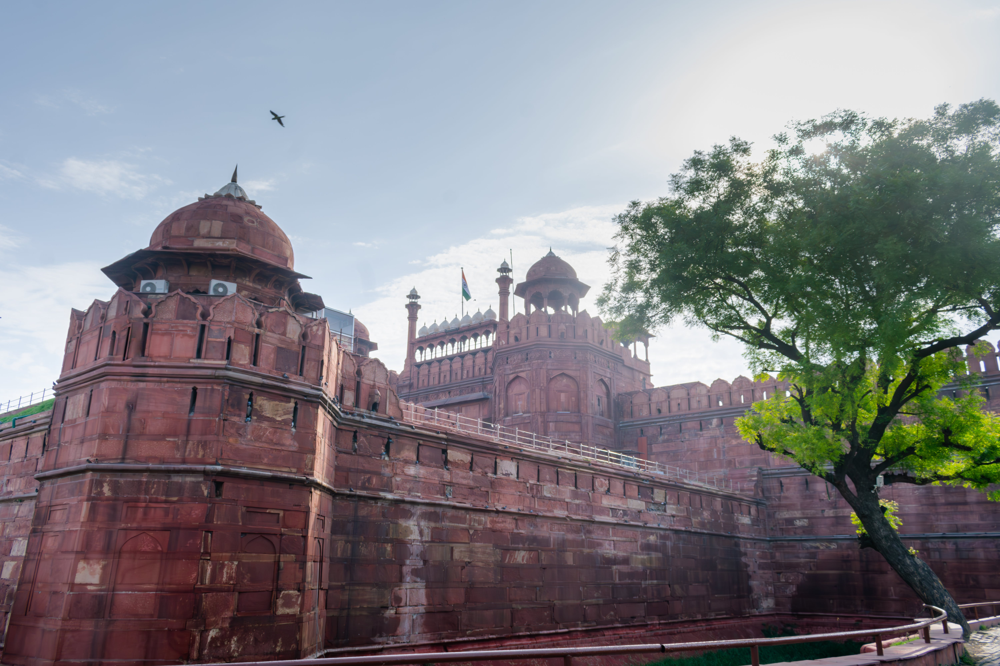
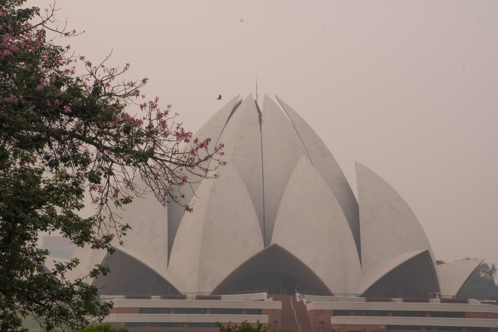

Tourist Places In Delhi

Kutub Minar
Construction on this sandstone minaret was begun in 1192. Surrounded by other historical sites, it is the
most popular monument in India. Miniature Souvenir is available at Luv Indiya, 12 B Janpath Market,
Connaught Place, New Delhi

India Gate
Does this iconic site even need any introduction? Defining India, this monument which was erected in 1931 is
one of the best Delhi Tourist Attractions and serves as a revered memorial for the martyrs from the World
War I and Afghanistan war. Looking its best in the night, lined with beautiful lights, it is one site that
is also highly frequented by the locals. India gate is one of the most beautiful places to visit in Delhi at
night!

Red Fort
The face of the Indian Capital, Red Fort is a famous Tourist Places in Delhi which was built in 1638. A great
Mughal monument, it is entirely made up of red sandstone and displays imposing walls, marvellous
architecture, chhata bazaar, and entertaining light and sound show which are especially attractive. This
epitome of Mughal era is a very popular tourist place in Delhi. The Red Fort is one of those places to visit
in Delhi with friends and family.

Lotus Temple
A wonderful example of secularism, Bahai temple, famously called as Lotus temple symbolizes the unity of
four religions viz. Hinduism, Islam, Buddhism and Jainism. The Bahai or Lotus Temples easily makes a spot
for its self among the list of among the list of top tourist places in Delhi. Manifesting the secular faith
of Bahai community, this magnificent temple has its doors opened for people of religions and beliefs.